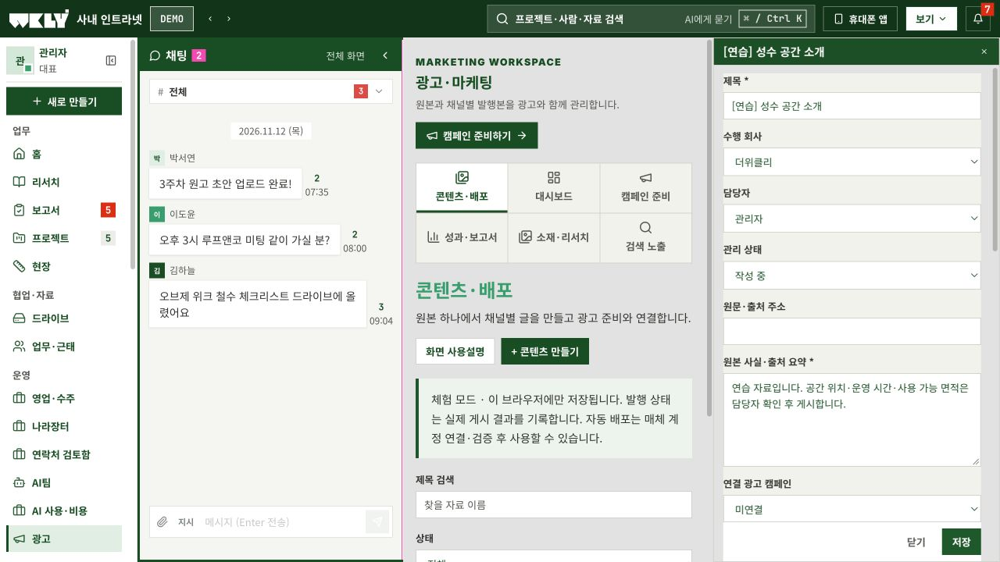
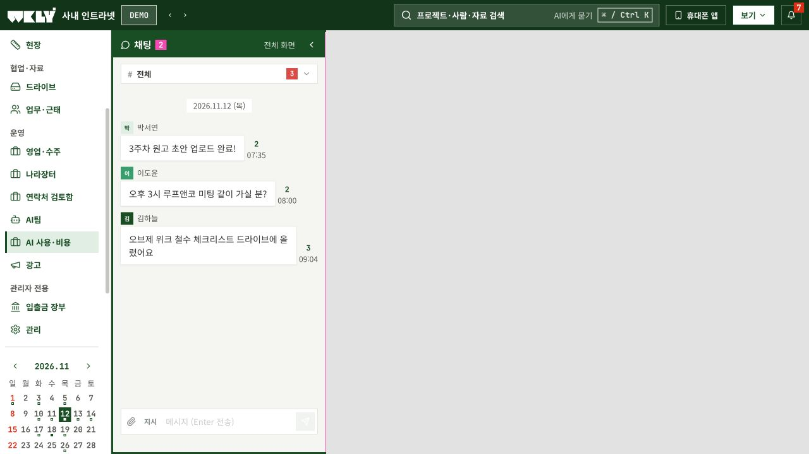

4. 원본에서 채널별 글을 만들고 광고와 연결하기
- 광고 → 콘텐츠·배포 → + 콘텐츠 만들기를 누릅니다.
- 원본 사실과 출처를 입력합니다. 장소·날짜·가격은 확인한 정보만 적습니다.
- 네이버 블로그·인스타그램·유튜브 탭마다 제목·본문·태그를 작성합니다. 필요하면 AI 도움을 펼칩니다.
- 이미지·영상·문구 권리를 확인하고 초안으로 먼저 저장합니다.
- 관리자가 저장된 문안을 검수해 승인으로 저장합니다. 내용이 바뀌면 초안으로 돌아가며 다시 승인해야 합니다.
- 실제 매체에서 게시한 뒤 발행 주소·게시물 ID를 기록하고 해당 채널을 발행으로 저장합니다.
- 같은 회사의 기존 광고 캠페인을 선택해 연결합니다. 광고 소재·집행 예산은 기존 캠페인 준비에서 별도로 검토합니다.

이 화면의 저장·승인은 실제 외부 게시나 광고비 집행을 실행하지 않습니다. 인스타·유튜브 자동 배포는 매체 연결과 검증 후 활성화할 대상입니다. 네이버 블로그는 자료 준비 후 담당자가 최종 게시합니다.
5. 필요한 순간에 AI를 사용하고 비용 확인하기
- 각 편집 화면의 필요할 때 AI 도움 받기를 펼칩니다.
- 출처·사실·원하는 결과가 요청문에 맞게 들어갔는지 확인합니다. 최대 6,000자이며 필요한 자료만 넣습니다.
- 분류에는 빠른 모델, 작성·요약에는 표준 모델, 복잡한 비교에는 정밀 모델을 선택합니다.
- 연결된 모델의 예상 비용을 확인하고 API 실행·결과 확인을 누릅니다. 같은 요청의 재확인은 새 호출을 만들지 않습니다.
- 결과를 읽고 수정한 뒤 편집 내용에 적용 → 저장합니다. AI 결과만으로 게시·발송하지 않습니다.
- 한도나 장애가 있으면 요청문 복사로 기존 AI 앱에서 직접 작업한 후 붙여넣습니다.

관리자가 처음 설정할 때
Console에서 실제 잔액·제공 크레딧 만료·다른 업무 사용액을 확인합니다. AI 사용·비용 → 모델·기간 한도 설정에서 사용할 모델 ID와 현재 입력·출력 단가, 시작·종료 시각, 배정 한도를 입력합니다. 처음에는 $1 시험 한도를 권장합니다. 기간 사용을 허용해도 한도가 $0이면 API 실행은 차단됩니다. 모델·기간 설정을 저장하면 열린 AI 도움말에도 반영되며 작성 중인 요청문과 결과는 유지됩니다. 연결 전에는 API 버튼이 비활성입니다.
API 요청 뒤 비용 합계와 최근 실행 기록이 자동으로 갱신됩니다. 이 조회는 새로운 AI 호출을 만들지 않습니다. 정산 비용은 소수 여섯 자리로 표시하며, 0보다 크고 $0.000001 미만인 금액은 <$0.000001, 금액이 없거나 잘못되면 확인 필요로 표시합니다. 예전 화면의 $0.0000은 반올림된 금액일 수 있어 무료라는 뜻이 아닙니다. 기록의 예약은 아직 정산된 금액이 아닙니다.
이 도구의 비용과 조직 전체 API 비용은 다릅니다. 기존 AI 팀원과 다른 키의 사용액은 별도 확인하세요. 불확실한 요청의 예약 금액은 과소 집계를 막기 위해 유지됩니다. 자동 충전하지 않습니다.